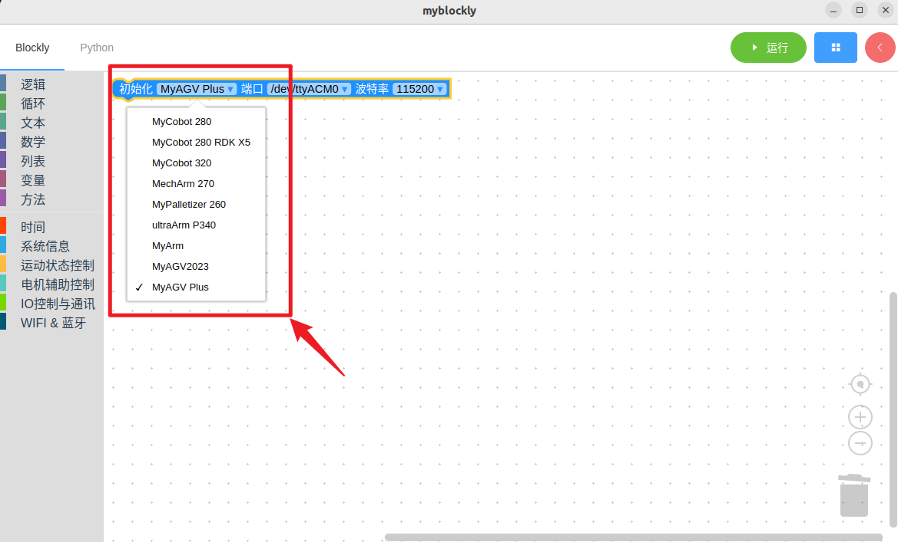
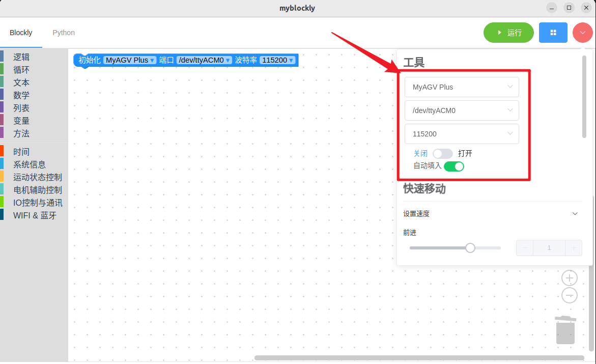
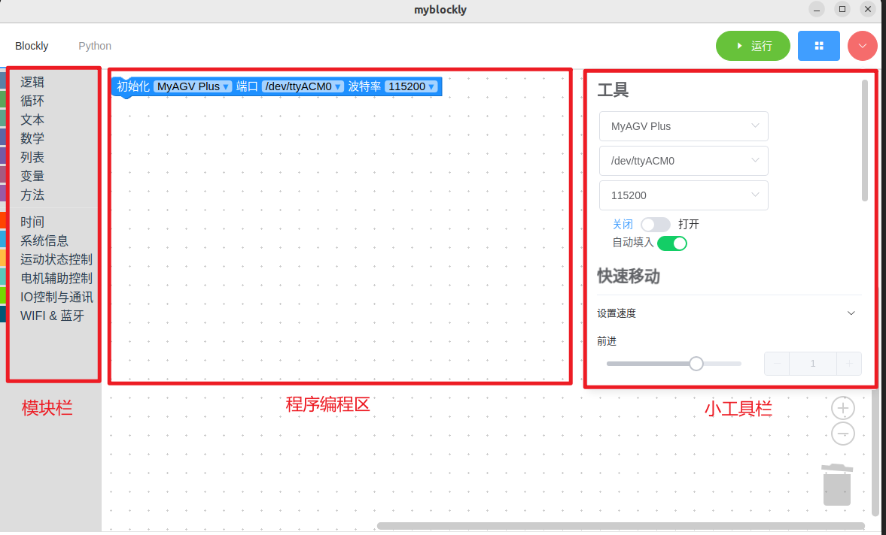
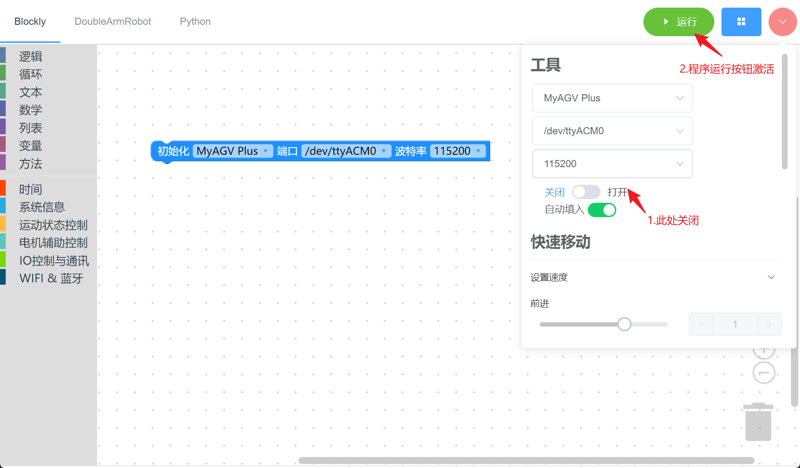
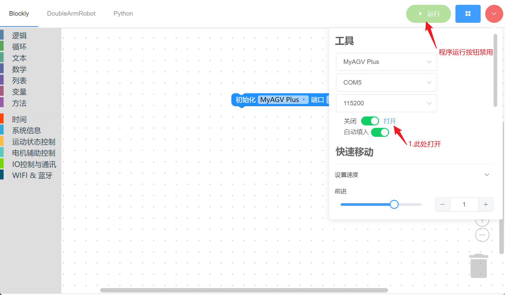
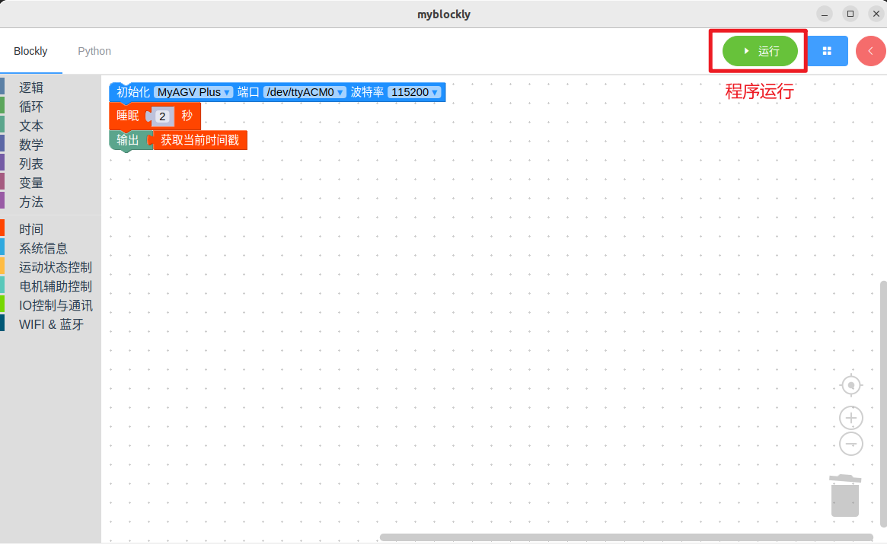
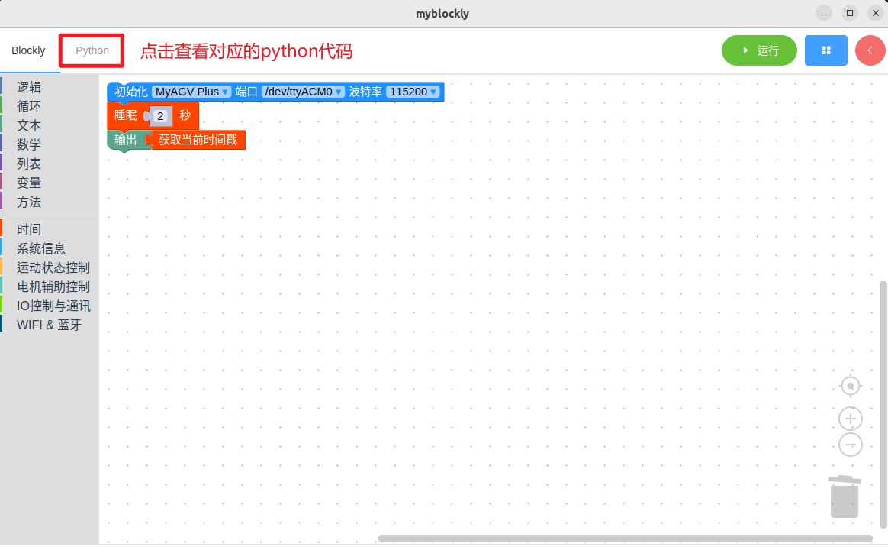
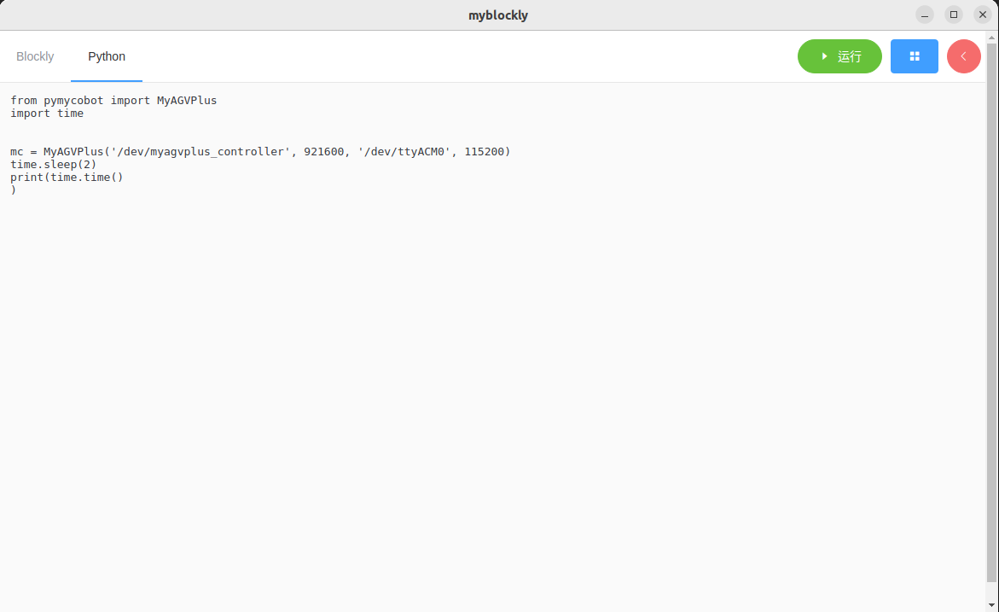

1 myBlockly初始使用
准备工作
在下载 myBlockly 之前，您需要配置 Python 环境并使用 myStudio 刻录固件。详情请参考以下操作方法。
- 环境配置。使用 myBlockly 之前，请确保已在计算机上配置好 Python 环境。
myAGV Plus 搭载的 NVIDIA Jetson Orin Nano Super 平台，已预装 Ubuntu 22.04 系统及适配的 Python 开发环境，因此无需构建和管理。
- 固件刻录。
如何使用 myStudio 刻录固件，请参考myStudio
myBlockly下载安装
准备工作完成后可以下载安装myBlockly。下载地址：
注意: 请确保下载最新版本。
使用前提
- 正式开始编程使用前，一定要选择对应的机器型号，否则容易造成硬件损害

- 用控制面板控制机器时，一定要选择对应的机器型号，否则容易造成硬件损害

myBlockly界面展示

模块栏：
- 包含程序编写所需的方法模块，可以通过鼠标放入程序编程区进行拼接
小工具栏：
点击右上角粉红色按钮会出现一个小工具栏，此处可以选择正确的机型、串口号以及波特率。也可以通过滑动或者直接在输入需设置的运动速度。鼠标点击最底部的运动控制按钮，机器将根据对应的方向进行运动。
程序编辑区域：
- 运行程序之前需要在初始化模块中或者小工具栏内选择正确的机型、端口以及波特率，否则程序无法正常运行。
- 把所需的模块方法拖拽到该区域拼接起来实现自己的程序。
注意:
串口号一般为/dev/ttyACM0，波特率一般为115200。
当程序无法运行的时候请检查小工具栏是否断开链接（如下图所示）。


程序运行

拖动想要的方法模块，编辑自己的程序（如上图所示），每个模块结构相结合在一起（有ki的声音），再点击“运行”就可以将代码上传到机械臂当中运行了。
注意： 操作机械臂运动的程序是需要时间来完成的，所以在一个动作之后需要接上一个睡眠模块，给机械臂运动的时间再进行下一个运动。（自己因情况决定所需的时间，机械臂默认设定跑myBlockly最低的睡眠时间不低于0.5s）否则会导致机械臂无法达到理想的运动。
点击左上角“Python”选项可以查阅对应的Python代码，如下图所示。


程序保存和载入
myBlockly的程序以 .json 格式保存，点击界面右上角蓝色方框，出现“保存”选项点击后，即可保存程序。

同样点击蓝色方框，点击”加载“选项，可以导入已保存的程序。